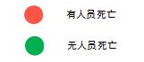

<!DOCTYPE html>
<html lang="en">
<head>
  <meta charset="UTF-8">

  <title>1994-2014美国恐怖袭击事件分布可视化</title>
  <link href="//maxcdn.bootstrapcdn.com/font-awesome/4.1.0/css/font-awesome.min.css" rel="stylesheet">
  <link rel="stylesheet" href="./static/css/leaflet.css">
  <link rel="stylesheet" href="./static/css/L.Control.Range.css" >
  <link rel="stylesheet" href="./static/css/leaflet-sidebar.css">
  <link rel="stylesheet" href="./static/css/leaflet-slider.css">
  <link rel="stylesheet" href="./static/css/L.Control.HtmlLegend.css">

  <script src="./static/js/leaflet.js"></script>
  <script src="http://code.jquery.com/jquery-1.11.0.min.js"></script>
  <script src="./static/js/papaparse.min.js"></script>
  <script src="./static/js/L.Control.Range.js"></script>
  <script src="./static/js/heatmap.js"></script>
  <script src="./static/js/leaflet-heat.js"></script>
  <script src="./static/js/leaflet-sidebar.js"></script>
  <script src="./static/js/leaflet-slider.js"></script>
  <script src="./static/js/L.Control.HtmlLegend.js"></script>

  <style>
    #map-container {
/*      width: 1400px;
      height: 750px;
      margin: 0 auto;*/
      position: absolute; top: 0; left:0; bottom:0; right: 0;
    }


  </style>
</head>


<body>


  <div id="map-container"></div>
  <script>

    var m = L.map('map-container').setView([37.09,-96.41], 4.5);
    var layer = L.tileLayer('https://api.tiles.mapbox.com/v4/{id}/{z}/{x}/{y}.png?access_token=pk.eyJ1IjoibWFwYm94IiwiYSI6ImNpejY4NXVycTA2emYycXBndHRqcmZ3N3gifQ.rJcFIG214AriISLbB6B5aw', {
      maxZoom: 8,
      minZoom: 4,
      attribution: 'Map data &copy; <a href="http://openstreetmap.org">OpenStreetMap</a> contributors, ' +
      '<a href="http://creativecommons.org/licenses/by-sa/2.0/">CC-BY-SA</a>, ' +
      'Imagery © <a href="http://mapbox.com">Mapbox</a>',
      id: 'mapbox.streets'
    }).addTo(m);


    var terrorData = [0,0,0];
    var arrPoints; 
    var circle;
    var circleGroup =  L.featureGroup();


    //slider
	var	slider = L.control.slider(function(value) {

      if(m.hasLayer(circleGroup)){
        m.removeLayer(circleGroup);
      }
      circleGroup.clearLayers();

      for(var i = 1, _l = terrorData.length-1; i < _l; i++) {

        var item = terrorData[i];

        var lat = item[6];
        var lon = item[7];
        var nkill = item[8];

        var year = parseInt(item[0]);

        if(year == parseInt(value))
        {
          //有人员死亡
          if(nkill > 0)
          {
                //标记circle
                circle = L.circle([lat,lon], {
                  color: '#f03',
                  fillColor: '#f03',
                  fillOpacity: 1,
                  radius: 40000
                }).addTo(circleGroup);

          }

          //无人员死亡
          if(nkill == 0)
          {
                //标记circle
                circle = L.circle([lat,lon], {
                  color: 'green',
                  fillColor: 'green',
                  fillOpacity: 1,
                  radius: 40000
                }).addTo(circleGroup);

          }
    
                //标记popup
                var popupTip = item[10];
                circle.bindPopup(popupTip);
                circle.on('mouseover', function (e) {
                  this.openPopup();
                });
                circle.on('mouseout', function (e) {
                  this.closePopup();
                });

        }


      }
      m.addLayer(circleGroup);

			}, {
			min:1994,
    		max: 2014,
    		value: 1994,
    		step:1,
    		size: '250px',
    		collapsed:false,
    		orientation:'horizontal',
    		showValue:true,
    		title:'Year',
    		increment:true,
    		syncSlider:true,
    		id: 'slider'
		}).addTo(m);

var legend = L.control({position: 'bottomright'});

legend.onAdd = function (m) {
    var div = L.DomUtil.create('div', 'legend');
    div.innerHTML +=  ''
    // div.innerHTML +=  ''  + '     Conservation Restriction on Private Land' + '<br>'

    return div;
};

legend.addTo(m);


    //读取数据文件
    Papa.parse('./static/data/normal.csv', {
      download: true,
      complete: function(results) {

        terrorData = results.data;

        var data = results.data;
        var circle,popupTip,lat,lon;
        for(var i = 1, _l = data.length-1; i < _l; i++) {

          var item = data[i];
          lat = item[6];
          lon = item[7];
          nkill = item[8];

          // arrPoints[i] = [lat,lon];

          //有人员死亡
          if(nkill > 0)
          {
                //标记circle
                circle = L.circle([lat,lon], {
                  color: '#f03',
                  fillColor: '#f03',
                  fillOpacity: 0.5,
                  radius: 30000
                }).addTo(m);

          }

          //无人员死亡
          if(nkill == 0)
          {
                //标记circle
                circle = L.circle([lat,lon], {
                  color: 'green',
                  fillColor: 'green',
                  fillOpacity: 0.5,
                  radius: 30000
                }).addTo(m);

          }


                //标记popup
                popupTip = item[10];
                circle.bindPopup(popupTip);
                circle.on('mouseover', function (e) {
                  this.openPopup();
                });
                circle.on('mouseout', function (e) {
                  this.closePopup();
                });

              }

         //热力图
  //       arrPoints = terrorData.map(function (p) { return [parseFloat(p[6]), parseFloat(p[7]),parseFloat(p[9])]; });
  //       arrPoints.shift();
  //       arrPoints.pop();
  //       console.log(arrPoints);
		// var heat = L.heatLayer(arrPoints, 
		// 	{radius: 20},
		// 	{blur: 20},
		// 	{maxZoom: 5},
		// 	{0.1: 'blue', 0.15: 'lime', 0.20: 'red'}
		// 	).addTo(m);


            }
          });


     </script>
     </body>
     </html>
